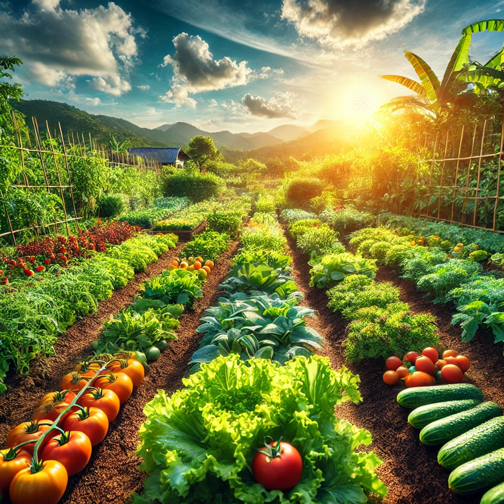
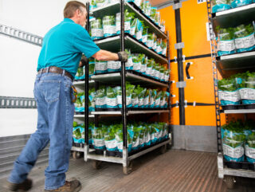
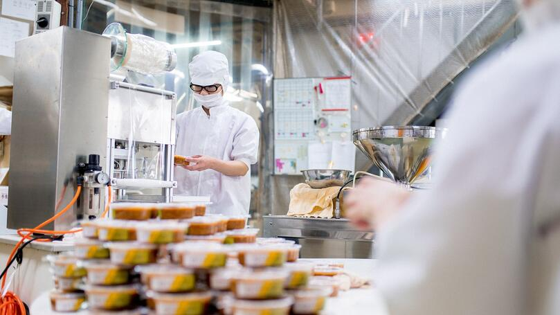

Discover how our fruits and vegetables are grown, transported, and processed to reach you in the best possible condition.
Our products are grown using eco-friendly methods, free from pesticides or chemicals. Our farmers follow organic farming techniques that protect the soil and biodiversity.
After harvesting, our products are carefully transported to storage facilities to maintain their freshness. We use sustainable transportation methods to reduce our environmental footprint.
Our products are sorted and packaged by hand using eco-friendly materials. Our labels reflect the organic quality of the products and our eco-certifications.
Once packaged, the products are delivered to you, either through organic stores or direct home delivery. We ensure fast and safe delivery so you can enjoy their freshness.